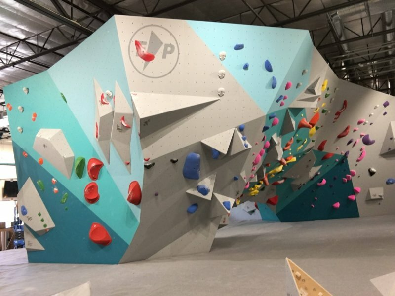

Dunfermline Climbing Wall
Prior to 2017 there were only a handful of walls in Scotland with mixed climbing facilities (bouldering and roped climbing). There were 2 in Glasgow, 2 in Edinburgh and 1 in Dundee. The Association of British Climbing (ABC) published a survey in 2021 stating that 45% of walls which completed their survey had opened within the last 5 years. In the recent 10 years the popularity of climbing has skyrocketed and in 2020 it became an Olympic Sport which has further increased its popularity. Movies such as Freesolo and the Dawn wall have also increased awareness for the sport. As a result, there has been an influx of bouldering facilities opened. Bouldering is climbing without a rope or harness but with a big purpose built matt to fall onto and is particularly accessible because it doesn’t require a partner, requires minimal equipment, requires minimal training and anyone can participate in it.